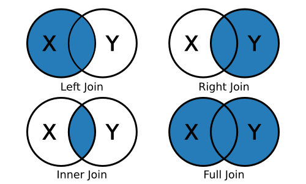

A course in quantitative research workflow for students in the higher education administration program at the University of Florida
So far, we have only worked with single data files: we read in a file, wrangled our data, and, sometimes, outputted a new file. But very often, a key aspect of the data wrangling workflow is to combine more than one data set together. This may include appending new rows to an existing data frame in memory or joining two data sets together using a common key value found in both. Another key data manipulation task is to reshape our data, pivoting from wide to long form (or vice versa). We’ll go through each individually below.
After you download and unzip the data for today’s lesson, move the
full folder, sch_test, into the data subdirectory. It should look
something like this:
|__ data/
|-- ...
|__ sch_test/
|-- all_schools.csv
|-- all_schools_wide.csv
|__ by_school/
|-- bend_gate_1980.csv
|-- bend_gate_1981.csv
|...
|-- spottsville_1985.csv
These fake data represent test scores across three subjects — math,
reading, and science — across four schools over six years. Each
school has a file for each year in the by_school subdirectory. The
two files in sch_test directory, all_schools.csv and
all_schools_wide.csv, combine the individual files but in different
formats. We’ll use these data sets to practice appending, joining, and
reshaping.
As always, we begin by reading in the tidyverse library and assigning our paths to macros we can reuse below.
## ---------------------------
## libraries
## ---------------------------
library(tidyverse)
## ── Attaching packages ─────────────────────────────────────── tidyverse 1.3.2 ──
## ✔ ggplot2 3.4.0 ✔ purrr 1.0.1
## ✔ tibble 3.1.8 ✔ dplyr 1.1.0
## ✔ tidyr 1.3.0 ✔ stringr 1.5.0
## ✔ readr 2.1.3 ✔ forcats 1.0.0
## ── Conflicts ────────────────────────────────────────── tidyverse_conflicts() ──
## ✖ dplyr::filter() masks stats::filter()
## ✖ dplyr::lag() masks stats::lag()
As we did in the past lesson, we run this script assuming that
our working directory is set to the scripts directory. Notice that
we also include macros for our subdirectories within the data
directory. Since they are nested, we can use the previous macros to
set new macros.
## ---------------------------
## directory paths
## ---------------------------
## assume we're running this script from the ./scripts subdirectory
dat_dir <- file.path("..", "data")
sch_dir <- file.path(dat_dir, "sch_test") # use dat_dir
bys_dir <- file.path(sch_dir, "by_school") # use sch_dir
Our first task is the most straightforward. When appending data, we simply add similarly structured rows to an exiting data frame. What do I mean by similarly structured? Imagine you have a data frame that looks like this:
| id | year | score |
|---|---|---|
| A | 2020 | 98 |
| B | 2020 | 95 |
| C | 2020 | 85 |
| D | 2020 | 94 |
Now, assume you are given data that look like this:
| id | year | score |
|---|---|---|
| E | 2020 | 99 |
| F | 2020 | 90 |
These data are similarly structured: same column names in the same order. If we know that the data came from the same process (e.g., ids represent students in the same classroom with each file representing a different test day), then we can safely append the second to the first:
| id | year | score |
|---|---|---|
| A | 2020 | 98 |
| B | 2020 | 95 |
| C | 2020 | 85 |
| D | 2020 | 94 |
| E | 2020 | 99 |
| F | 2020 | 90 |
Data that are the result of the exact same data collecting process across locations or time may be appended. In education research, administrative data are often recorded each term or year, meaning you can build a panel data set by appending. The NCES IPEDS data files generally work like this.
However, it’s incumbent upon you as the researcher to understand your
data. Just because you are able to append (R will try to make it work
for you) doesn’t mean you always should. What if the score column in
our data weren’t on the same scale? What if the test date mattered but
isn’t included in the file? What if the files actually represent
scores from different grades or schools? It’s possible that we can
account for each of these issues as we clean our data, but it won’t
happen automatically — append with care!
Let’s practice with an example. First, we’ll read in three data files
from the by_school directory.
## ---------------------------
## input
## ---------------------------
## read in data, storing in df_*, where * is a unique number
df_1 <- read_csv(file.path(bys_dir, "bend_gate_1980.csv"))
## Rows: 1 Columns: 5
## ── Column specification ────────────────────────────────────────────────────────
## Delimiter: ","
## chr (1): school
## dbl (4): year, math, read, science
##
## ℹ Use `spec()` to retrieve the full column specification for this data.
## ℹ Specify the column types or set `show_col_types = FALSE` to quiet this message.
df_2 <- read_csv(file.path(bys_dir, "bend_gate_1981.csv"))
## Rows: 1 Columns: 5
## ── Column specification ────────────────────────────────────────────────────────
## Delimiter: ","
## chr (1): school
## dbl (4): year, math, read, science
##
## ℹ Use `spec()` to retrieve the full column specification for this data.
## ℹ Specify the column types or set `show_col_types = FALSE` to quiet this message.
df_3 <- read_csv(file.path(bys_dir, "bend_gate_1982.csv"))
## Rows: 1 Columns: 5
## ── Column specification ────────────────────────────────────────────────────────
## Delimiter: ","
## chr (1): school
## dbl (4): year, math, read, science
##
## ℹ Use `spec()` to retrieve the full column specification for this data.
## ℹ Specify the column types or set `show_col_types = FALSE` to quiet this message.
Looking at each, we can see that they are similarly structured, with
the following columns in the same order: school, year, math,
read, science:
## ---------------------------
## process
## ---------------------------
## show each
df_1
## # A tibble: 1 × 5
## school year math read science
## <chr> <dbl> <dbl> <dbl> <dbl>
## 1 Bend Gate 1980 515 281 808
df_2
## # A tibble: 1 × 5
## school year math read science
## <chr> <dbl> <dbl> <dbl> <dbl>
## 1 Bend Gate 1981 503 312 814
df_3
## # A tibble: 1 × 5
## school year math read science
## <chr> <dbl> <dbl> <dbl> <dbl>
## 1 Bend Gate 1982 514 316 816
From the dplyr library, we use the
bind_rows()
function to append the second and third data frames to the first.
## append files
df <- bind_rows(df_1, df_2, df_3)
## show
df
## # A tibble: 3 × 5
## school year math read science
## <chr> <dbl> <dbl> <dbl> <dbl>
## 1 Bend Gate 1980 515 281 808
## 2 Bend Gate 1981 503 312 814
## 3 Bend Gate 1982 514 316 816
That’s it!
Quick exercise
Read in the rest of the files for Bend Gate and append them to the current data frame.
More often than appending your data files, however, you will need to merge or join them. With a join, you add to your data frame new columns (new variables) that come from a second data frame. The key difference between joining and appending is that a join requires a key, that is, a variable or index common to each data frame that uniquely identifies observations. It’s this key that’s used to line everything up.
For example, say you have these two data sets,
| id | sch | year | score |
|---|---|---|---|
| A | 1 | 2020 | 98 |
| B | 1 | 2020 | 95 |
| C | 2 | 2020 | 85 |
| D | 3 | 2020 | 94 |
| sch | type |
|---|---|
| 1 | elementary |
| 2 | middle |
| 3 | high |
and you want to add the school type to the first data set. You can
do this because you have a common key between each set: sch. A
pseudocode description of this join would be:
typetype value that
corresponds to the matching sch value in both data frames:
sch == 1 --> elementarysch == 2 --> middlesch == 3 --> highThe end result would then look like this:
| id | sch | year | score | type |
|---|---|---|---|---|
| A | 1 | 2020 | 98 | elementary |
| B | 1 | 2020 | 95 | elementary |
| C | 2 | 2020 | 85 | middle |
| D | 3 | 2020 | 94 | high |
A common join task in education research involves adding group-level aggregate statistics to individual observations: for example, adding school-level average test scores to each student’s row. With a panel data set (observations across time), we might want within-year averages added to each unit-by-time period row. Let’s do the second, adding within-year across school average test scores to each school-by-year observation.
## ---------------------------
## input
## ---------------------------
## read in all_schools data
df <- read_csv(file.path(sch_dir, "all_schools.csv"))
## Rows: 24 Columns: 5
## ── Column specification ────────────────────────────────────────────────────────
## Delimiter: ","
## chr (1): school
## dbl (4): year, math, read, science
##
## ℹ Use `spec()` to retrieve the full column specification for this data.
## ℹ Specify the column types or set `show_col_types = FALSE` to quiet this message.
Looking at the data, we see that it’s similar to what we’ve seen above, with additional schools.
## show
df
## # A tibble: 24 × 5
## school year math read science
## <chr> <dbl> <dbl> <dbl> <dbl>
## 1 Bend Gate 1980 515 281 808
## 2 Bend Gate 1981 503 312 814
## 3 Bend Gate 1982 514 316 816
## 4 Bend Gate 1983 491 276 793
## 5 Bend Gate 1984 502 310 788
## 6 Bend Gate 1985 488 280 789
## 7 East Heights 1980 501 318 782
## 8 East Heights 1981 487 323 813
## 9 East Heights 1982 496 294 818
## 10 East Heights 1983 497 306 795
## # … with 14 more rows
Our task is two-fold:
## ---------------------------
## process
## ---------------------------
## get test score summary
df_sum <- df %>%
## grouping by year so average within each year
group_by(year) %>%
## get mean(<score>) for each test
summarize(math_m = mean(math),
read_m = mean(read),
science_m = mean(science))
## show
df_sum
## # A tibble: 6 × 4
## year math_m read_m science_m
## <dbl> <dbl> <dbl> <dbl>
## 1 1980 507 295. 798.
## 2 1981 496. 293. 788.
## 3 1982 506 302. 802.
## 4 1983 500 293. 794.
## 5 1984 490 300. 792.
## 6 1985 500. 290. 794.
Quick exercise
Thinking ahead, why do you think we created new names for the summarized columns? Why the
_mending?
While one can merge using base
R,
dplyr uses the SQL language of
joins, which can be
conceptually clearer (particularly for those who already have
experience with relational database structures). Here are the most
common joins you will use:
left_join(x, y): keep all x, drop unmatched yright_join(x, y): keep all y, drop unmatched xinner_join(x, y): keep only matchingfull_join(x, y): keep everything
For example, the result of a left join between data frame X and data frame Y will include all observations in X and those in Y that are also in X.
X
| id | col_A | col_B |
|---|---|---|
| 001 | a | 1 |
| 002 | b | 2 |
| 003 | a | 3 |
Y
| id | col_C | col_D |
|---|---|---|
| 001 | T | 9 |
| 002 | T | 9 |
| 004 | F | 9 |
XY (result of left join)
| id | col_A | col_B | col_C | col_D |
|---|---|---|---|---|
| 001 | a | 1 | T | 9 |
| 002 | b | 2 | T | 9 |
| 003 | a | 3 | NA | NA |
Observations in both X and Y (001 and 002, above), will have
data for the columns that were separately in X and Y before. Those
in X only (003), will have missing values in the new columns that
came from Y because they didn’t exist there. Observations in Y but
not X (004) are dropped entirely.
Back to our example…
Since we want to join a smaller aggregated data frame, df_sum, to
the original data frame, df, we’ll use a left_join(). The join
functions will try to guess the joining variable (and tell you what it
picked) if you don’t supply one, but we’ll specify one to be clear.
## start with data frame...
df_joined <- df %>%
## pipe into left_join to join with df_sum using "year" as key
left_join(df_sum, by = "year")
## show
df_joined
## # A tibble: 24 × 8
## school year math read science math_m read_m science_m
## <chr> <dbl> <dbl> <dbl> <dbl> <dbl> <dbl> <dbl>
## 1 Bend Gate 1980 515 281 808 507 295. 798.
## 2 Bend Gate 1981 503 312 814 496. 293. 788.
## 3 Bend Gate 1982 514 316 816 506 302. 802.
## 4 Bend Gate 1983 491 276 793 500 293. 794.
## 5 Bend Gate 1984 502 310 788 490 300. 792.
## 6 Bend Gate 1985 488 280 789 500. 290. 794.
## 7 East Heights 1980 501 318 782 507 295. 798.
## 8 East Heights 1981 487 323 813 496. 293. 788.
## 9 East Heights 1982 496 294 818 506 302. 802.
## 10 East Heights 1983 497 306 795 500 293. 794.
## # … with 14 more rows
Quick exercise
Look at the first 10 rows of
df_joined. What do you notice about the new summary columns we added?
Reshaping data is a common data wrangling task. Whether going from wide to long format or long to wide, it can be a painful process. But with a little practice, the ability to reshape data will become a powerful tool in your toolbox.
While there are various definitions of tabular data structure, the two you will most often come across are wide and long. Wide data are data structures in which all variable/values are columns. At the extreme end, every id will only have a single row:
| id | math_score_2019 | read_score_2019 | math_score_2020 | read_score_2020 |
|---|---|---|---|---|
| A | 93 | 88 | 92 | 98 |
| B | 99 | 92 | 97 | 95 |
| C | 89 | 88 | 84 | 85 |
Notice how each particular score (by year) has its own column? Compare this to long data in which each observational unit (id test score within a given year) will have a row:
| id | year | test | score |
|---|---|---|---|
| A | 2019 | math | 93 |
| A | 2019 | read | 88 |
| A | 2020 | math | 92 |
| A | 2020 | read | 98 |
| B | 2019 | math | 99 |
| B | 2019 | read | 92 |
| B | 2020 | math | 97 |
| B | 2020 | read | 95 |
| C | 2019 | math | 89 |
| C | 2019 | read | 88 |
| C | 2020 | math | 84 |
| C | 2020 | read | 85 |
The first wide and second long table present the same information in a different format. So why bother reshaping? The short answer is that you sometimes need one format and sometimes the other due to the demands of the analysis you want to run, the figure you want to plot, or the table you want to make.
NB: Data in the wild are often some combination of these two
types: wide-ish or long-ish. For an example, see our
all_schools.csv data below, which is wide in some variables (test),
but long in others (year). The point of defining long vs wide is not
to have a testable definition, but rather to have a framework for
thinking about how your data are structured and if that structure will
work for your data analysis needs.
To start, we’ll go back to the all_schools.csv file.
## ---------------------------
## input
## ---------------------------
## reading again just to be sure we have the original data
df <- read_csv(file.path(sch_dir, "all_schools.csv"))
## Rows: 24 Columns: 5
## ── Column specification ────────────────────────────────────────────────────────
## Delimiter: ","
## chr (1): school
## dbl (4): year, math, read, science
##
## ℹ Use `spec()` to retrieve the full column specification for this data.
## ℹ Specify the column types or set `show_col_types = FALSE` to quiet this message.
Notice how the data are wide in test: each school has one row per year, but each test gets its own column. While this setup can be efficient for storage, it’s not always the best for analysis or even just browsing. What we want is for the data to be long.
Instead of each test having its own column, we would like to make the data look like our long data example above, with each row representing a single school, year, test, score:
| school | year | test | score |
|---|---|---|---|
| Bend Gate | 1980 | math | 515 |
| Bend Gate | 1980 | read | 281 |
| Bend Gate | 1980 | science | 808 |
| … | … | … | … |
As with joins, you can reshape data frames using base R
commands.
But again, we’ll use tidyverse functions in the
tidyr library. Specifically, we’ll rely
on the tidyr pivot_longer() and pivot_wider() commands.
pivot_longer()The pivot_longer() function can take a number of arguments, but the
core things it needs to know are:
data: the name of the data frame you’re reshaping (we can use
%>% to pipe in the data name)cols: the names of the columns that you want to pivot into values
of a single new column (thereby making the data frame “longer”)names_to: the name of the new column that will contain the names
of the cols you just listedvalues_to: the name of the column where the values in the cols
you listed will goIn our current situation, our cols to pivot are "math", "read", and
"science". Since they are test types, we’ll call our names_to column
"test" and our values_to column "score".
## ---------------------------
## process
## ---------------------------
## wide to long
df_long <- df %>%
## cols: current test columns
## names_to: where "math", "read", and "science" will go
## values_to: where the values in cols will go
pivot_longer(cols = c("math","read","science"),
names_to = "test",
values_to = "score")
## show
df_long
## # A tibble: 72 × 4
## school year test score
## <chr> <dbl> <chr> <dbl>
## 1 Bend Gate 1980 math 515
## 2 Bend Gate 1980 read 281
## 3 Bend Gate 1980 science 808
## 4 Bend Gate 1981 math 503
## 5 Bend Gate 1981 read 312
## 6 Bend Gate 1981 science 814
## 7 Bend Gate 1982 math 514
## 8 Bend Gate 1982 read 316
## 9 Bend Gate 1982 science 816
## 10 Bend Gate 1983 math 491
## # … with 62 more rows
Quick (ocular test) exercise
How many rows did our initial data frame
dfhave? How many unique tests did we have in each year? When reshaping from wide to long, how many rows should we expect our new data frame to have? Does our new data frame have that many rows?
pivot_wider()Now that we have our long data, let’s reshape it back to wide format
using pivot_wider(). In this case, we’re doing just the opposite
from before — here are the main arguments you need to attend to:
data: the name of the data frame you’re reshaping (we can use
%>% to pipe in the data name)names_from: the name of the column that contains the values which
will become new column namesvalues_from: the name of the column that contains the values
associated with the values in names_from column; these will go
into the new columns.## ---------------------------
## process
## ---------------------------
## long to wide
df_wide <- df_long %>%
## names_from: values in this column will become new column names
## values_from: values in this column will become values in new cols
pivot_wider(names_from = "test",
values_from = "score")
## show
df_wide
## # A tibble: 24 × 5
## school year math read science
## <chr> <dbl> <dbl> <dbl> <dbl>
## 1 Bend Gate 1980 515 281 808
## 2 Bend Gate 1981 503 312 814
## 3 Bend Gate 1982 514 316 816
## 4 Bend Gate 1983 491 276 793
## 5 Bend Gate 1984 502 310 788
## 6 Bend Gate 1985 488 280 789
## 7 East Heights 1980 501 318 782
## 8 East Heights 1981 487 323 813
## 9 East Heights 1982 496 294 818
## 10 East Heights 1983 497 306 795
## # … with 14 more rows
Quick exercise
In this case, our new wide data frame,
df_wide, should be the same as our initial data frame. Is it? How can you tell?
Unfortunately, it’s not always so clear cut to reshape data. In this second example, we’ll again reshape from wide to long, but we’ll have to munge our data a bit after the reshape to make it analysis ready.
First, we’ll read in a second file all_schools_wide.csv. This file
contains the same information as before, but in a very wide format:
each school has only one row and each test by year value gets its own
column in the form <test>_<year>.
## ---------------------------
## input
## ---------------------------
## read in very wide test score data
df <- read_csv(file.path(sch_dir, "all_schools_wide.csv"))
## Rows: 4 Columns: 19
## ── Column specification ────────────────────────────────────────────────────────
## Delimiter: ","
## chr (1): school
## dbl (18): math_1980, read_1980, science_1980, math_1981, read_1981, science_...
##
## ℹ Use `spec()` to retrieve the full column specification for this data.
## ℹ Specify the column types or set `show_col_types = FALSE` to quiet this message.
## show
df
## # A tibble: 4 × 19
## school math_…¹ read_…² scien…³ math_…⁴ read_…⁵ scien…⁶ math_…⁷ read_…⁸ scien…⁹
## <chr> <dbl> <dbl> <dbl> <dbl> <dbl> <dbl> <dbl> <dbl> <dbl>
## 1 Bend … 515 281 808 503 312 814 514 316 816
## 2 East … 501 318 782 487 323 813 496 294 818
## 3 Niaga… 514 292 787 499 268 762 507 310 771
## 4 Spott… 498 288 813 494 270 765 507 289 801
## # … with 9 more variables: math_1983 <dbl>, read_1983 <dbl>,
## # science_1983 <dbl>, math_1984 <dbl>, read_1984 <dbl>, science_1984 <dbl>,
## # math_1985 <dbl>, read_1985 <dbl>, science_1985 <dbl>, and abbreviated
## # variable names ¹math_1980, ²read_1980, ³science_1980, ⁴math_1981,
## # ⁵read_1981, ⁶science_1981, ⁷math_1982, ⁸read_1982, ⁹science_1982
Second, we can pivot_longer() as we did before using the following
values for our key arguments:
data : df (but piped in using %>%)cols : use special tidyselect helper
function
contains() to select all test by year columnsnames_to: test_yearvalues_to: score## ---------------------------
## process
## ---------------------------
## wide to long
df_long <- df %>%
## NB: contains() looks for "19" in name: if there, it adds it to cols
pivot_longer(cols = contains("19"),
names_to = "test_year",
values_to = "score")
## show
df_long
## # A tibble: 72 × 3
## school test_year score
## <chr> <chr> <dbl>
## 1 Bend Gate math_1980 515
## 2 Bend Gate read_1980 281
## 3 Bend Gate science_1980 808
## 4 Bend Gate math_1981 503
## 5 Bend Gate read_1981 312
## 6 Bend Gate science_1981 814
## 7 Bend Gate math_1982 514
## 8 Bend Gate read_1982 316
## 9 Bend Gate science_1982 816
## 10 Bend Gate math_1983 491
## # … with 62 more rows
Quick exercise
Why did we use “19” as our value in the contains() function? HINT: use the
names()function to return a list of the original data frame (df) column names.
This mostly worked to get our data long, but now we have this weird
combined test_year column. What we really want are two columns, one
for the year and one for the test type. We can fix this using tidyr
separate()
function with the following arguments:
data: our df_long object, piped in using %>%col: the column we want to split (test_year)into: the names of the new columns to create from col (test
and year)sep: the name of the character that splits the values in col, so
R knows how to fill each of the into columns ("_")## separate test_year into two columns, filling appropriately
df_long_fix <- df_long %>%
## col: the column to split
## into: names of resulting splits
## sep: the split point --> left to "test", right to "year"
separate(col = "test_year",
into = c("test", "year"),
sep = "_")
## show
df_long_fix
## # A tibble: 72 × 4
## school test year score
## <chr> <chr> <chr> <dbl>
## 1 Bend Gate math 1980 515
## 2 Bend Gate read 1980 281
## 3 Bend Gate science 1980 808
## 4 Bend Gate math 1981 503
## 5 Bend Gate read 1981 312
## 6 Bend Gate science 1981 814
## 7 Bend Gate math 1982 514
## 8 Bend Gate read 1982 316
## 9 Bend Gate science 1982 816
## 10 Bend Gate math 1983 491
## # … with 62 more rows
Quick exercise
Redo the last few steps in a single combined chain using pipes. That is, start with
df(which containsall_schools_wide.csv), reshape long, and fix so that you end up with four columns — all in a single piped chain.
Just as all data sets are unique, so too are the particular steps you may need to take to append, join, or reshape your data. Even experienced coders rarely get all the steps correct the first try. Be prepared to spend time getting to know your data and figuring out, through trial and error, how to wrangle it so that it meets your analytic needs. Code books, institutional/domain knowledge, and patience are your friends here!